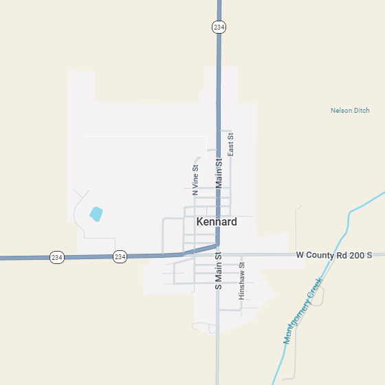

Watch Town Council Meetings
YouTube ChannelPublic Comments
Citizens are invited to address the Town Board during the public comment period at each meeting. Meetings are held on the second Wednesday of every month at 7:00 PM at Town Hall.
Fire Safety Game

Click to play the fire safety game and
support the Kennard Volunteer Fire Department.
Kennard, Indiana 47351
